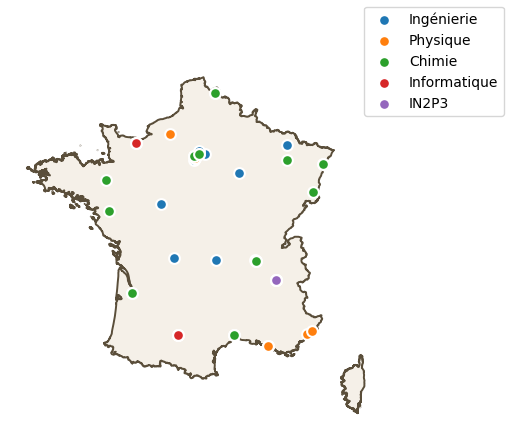

import matplotlib.pyplot as plt
import geopandas as gpd
import pandas as pd
import pygadm
from shapely.geometry import Point
from ipyleaflet import GeoJSON, Map, basemaps
import openpyxl as pyxl
user = 'scola'
import sys
sys.path.insert (0, f'/home/{user}/modules/routines/')
import routines as rt
path2sources = './sources/'
path2figures = './figures/'
marker_props = {
'marker': "o",
'color': "#d63031",
'markersize': 60,
'edgecolors': "white",
'linewidths': 1.5,
'zorder': 5,
}
france_props = {
'color': "#f5f0e8",
'edgecolor': "#5a4e3a",
'linewidth': 1.4,
'zorder': 3
}
france = pygadm.Items(name="France")
Load cities geolocation#
# Load cities geolocation
file = path2sources + 'villes.csv'
with open (file, 'r') as f:
content = f.read ()
f.close ()
lines = content.split ('\n')
villes = {}
for line in lines [:-1]:
nom, lat, long = line.split (',')
villes [nom.lower ()] = (lat, long)
gdf_villes = gpd.GeoDataFrame(
{"nom": list(villes.keys())},
geometry=[Point(lon, lat) for lat, lon in villes.values()],
crs="EPSG:4326",
)
---------------------------------------------------------------------------
FileNotFoundError Traceback (most recent call last)
Cell In[4], line 3
1 # Load cities geolocation
2 file = path2sources + 'villes.csv'
----> 3 with open (file, 'r') as f:
4 content = f.read ()
5 f.close ()
File ~/ADMINISTRATIF/GDR_grand-gap/cartographie_equipes/widegapmap/widegapmapenv/lib/python3.12/site-packages/IPython/core/interactiveshell.py:346, in _modified_open(file, *args, **kwargs)
339 if file in {0, 1, 2}:
340 raise ValueError(
341 f"IPython won't let you open fd={file} by default "
342 "as it is likely to crash IPython. If you know what you are doing, "
343 "you can use builtins' open."
344 )
--> 346 return io_open(file, *args, **kwargs)
FileNotFoundError: [Errno 2] No such file or directory: './sources/villes.csv'
Load labs data#
# Load labs data in a dict
datafile = path2sources + 'Liste Labo Equipes Personnes_ml_yc.xlsx'
data = pyxl.load_workbook(filename = datafile, data_only = True)
# open the first sheet as var sheet
datasheet = data.worksheets[0]
Labs = {}
mainkey = 'UMR/UPR'
# lecture des noms de colonnes
columns = {}
j = 1
colname = datasheet.cell (row = 1, column = j).value
while (colname != None ):
columns [colname] = j
j += 1
colname = datasheet.cell (row = 1, column = j).value
i = 2
rowname = datasheet.cell (row = i, column = columns [mainkey]).value
while (rowname != None):
lab = {}
for column_name in columns.keys ():
lab [column_name] = datasheet.cell (row = i, column = columns [column_name]).value
lab ['Coordinates'] = villes [lab ['Ville'].lower ()]
Labs [lab [mainkey]] = lab
i += 1
rowname = datasheet.cell (row = i, column = columns [mainkey]).value
pd_Labs = pd.DataFrame (Labs).T
cols = ['Acronyme labo', 'UMR/UPR', 'Institut principal', 'Ville']
# Convert data dict to GeoPandasDataFrame
gdf_Labs = gpd.GeoDataFrame(
pd.DataFrame (Labs).T [cols],
geometry=[Point(lon, lat) for lat, lon in [d ['Coordinates'] for d in Labs.values ()]],
crs="EPSG:4326",
)
VersaillesLabs = gdf_Labs.loc[gdf_Labs['Ville'].isin(['Versailles'])]
VersaillesLabs
| Acronyme labo | UMR/UPR | Institut principal | Ville | geometry | |
|---|---|---|---|---|---|
| UMR8635 | GEMaC | UMR8635 | Physique | Versailles | POINT (2.1301 48.8014) |
| UMR8180 | ILV | UMR8180 | Chimie | Versailles | POINT (2.1301 48.8014) |
| UMR8029 | SATIE | UMR8029 | Ingénierie | Versailles | POINT (2.1301 48.8014) |
Display labs data on France map#
Using pygadm.plot()#
# display data on France map
category = 'Institut principal'
# display France borders
france = pygadm.Items(name="France")
#spain = pygadm.Items(name="Spain")
fig, ax = plt.subplots ()
france.plot (ax=ax, **france_props)
# scatter labs by category
categories = list (gdf_Labs [category].unique ())
for cate in categories:
i = categories.index (cate)
subset = gdf_Labs.loc [gdf_Labs [category].isin([cate])]
# set marker properties
marker_props = {
'marker': "o",
'color': f'C{i}',
'markersize': 60,
'edgecolors': "white",
'linewidths': 1.5,
'zorder': 5,
}
subset.plot(
ax=ax,
**marker_props,
label = cate
)
# fig properties
fig.legend ()
ax.set_aspect (1.5)
plt.axis ('off')
fig_id = 'france'
#rt.save_figure (fig, path2figures + fig_id, ['png', 'svg'])

Using GeoPandas.explore()#
gdf_Labs.explore (column = category,
popup = True,
marker_kwds = {'radius': 5},
cmap = 'Set1')
Make this Notebook Trusted to load map: File -> Trust Notebook
Brouillon#
# temp : list of unique labcodes for claude to collect their address
toto = ''
for i in list ( gdf_Labs ['UMR/UPR'].unique ()):
toto += f'{i}, '
toto
'UMR5005, UMR9001, UPR8011, UMR6252, UMR7325, UMR5085, UMR7073, UMR6508, UMR5130, UMR9007, UMR5269, UMR8507, UMR8635, IRL2958, UMR6634, UMR7347, UMR6072, UMR7177, UMR5026, UMR7357 , UMR5635, UMR8520, UMR5214, UMR7198, UMR8180, UMR7334, UMR6502, UMR5218, UMR5270, UMR7010, UMR7588, UMR6602, UMR5256, UMR8247, UMR7361, UMR6226, UMR5221, UMR7076, UPR8001, UMR5213, UMR5628, UMR5615, UMR7341, UMR5821, UMR7642, UPR3407 , UMR5129, UMR9024, UPR2940, UMR7345, UMR8029, UMR5266, UMR8181, UMR7252, '
# display data on France map
category = 'Institut principal'
# scatter labs by category
categories = list (gdf_Labs [category].unique ())
for cate in categories:
i = categories.index (cate)
subset = gdf_Labs.loc [gdf_Labs [category].isin([cate])]
# set marker properties
marker_props = {
'marker': "o",
'color': f'C{i}',
'markersize': 60,
'edgecolors': "white",
'linewidths': 1.5,
'zorder': 5
}
subset.explore ()
#rt.save_figure (fig, path2figures + fig_id, ['png', 'svg'])
Brouillon#
# ── Villes à afficher (nom : longitude, latitude) ────────────────────────────
villes = {
"Paris": ( 2.3522, 48.8566),
"Lyon": ( 4.8357, 45.7640),
"Strasbourg": ( 7.7521, 48.5734),
"Marseille": ( 5.3698, 43.2965),
"Bordeaux": (-0.5792, 44.8378),
"Lille": ( 3.0573, 50.6292),
"Nantes": (-1.5534, 47.2184),
"Toulouse": ( 1.4442, 43.6047),
"Nice": ( 7.2620, 43.7102),
"Rennes": (-1.6778, 48.1173),
}
gdf_villes = gpd.GeoDataFrame(
{"nom": list(villes.keys())},
geometry=[Point(lon, lat) for lon, lat in villes.values()],
crs="EPSG:4326",
)
# France
france.plot(ax=ax, **france_props)
---------------------------------------------------------------------------
NameError Traceback (most recent call last)
Cell In[3], line 22
15 gdf_villes = gpd.GeoDataFrame(
16 {"nom": list(villes.keys())},
17 geometry=[Point(lon, lat) for lon, lat in villes.values()],
18 crs="EPSG:4326",
19 )
21 # France
---> 22 france.plot(ax=ax, **france_props)
NameError: name 'france' is not defined
fig, ax = plt.subplots ()
france.plot (ax=ax, **france_props)
# Points des villes
gdf_villes.plot(
ax=ax,
**marker_props
)
ax.set_aspect (1.5)
---------------------------------------------------------------------------
NameError Traceback (most recent call last)
Cell In[4], line 2
1 fig, ax = plt.subplots ()
----> 2 france.plot (ax=ax, **france_props)
3 # Points des villes
5 gdf_villes.plot(
6 ax=ax,
7 **marker_props
8 )
NameError: name 'france' is not defined